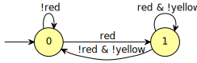
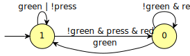

Translating an LTL formula into a monitor
Table of Contents
A monitor is a special type of automaton that is supposed to monitor a running system and move accordingly. A monitor detects an error when it cannot move: i.e., the system as performed some action, or reached some state that is not supposed to happen.
For instance here is a monitor that checks that yellow never occurs immediately after red.

This monitor stays in the initial state until red becomes true, it can then wait in the second state while red holds and yellow does not,, and will only move back to the initial state when both red and yellow are false. The only way this monitor would not be able to progress is if yellow becomes true while in the second state; in that case a violation should be reported.
Building a deterministic monitor
Shell
To build the above deterministic monitor using ltl2tgba, we simply
pass option -M (for monitor) and -D (for deterministic).
ltl2tgba -D -M '!F(red & X(yellow))'
HOA: v1 name: "G(!red | X!yellow)" States: 2 Start: 0 AP: 2 "red" "yellow" acc-name: all Acceptance: 0 t properties: trans-labels explicit-labels state-acc deterministic weak --BODY-- State: 0 [!0] 0 [0] 1 State: 1 [!0&!1] 0 [0&!1] 1 --END--
Python
The code is very similar to our previous example of building a never claim except that we explicitly require a deterministic monitor and output in the HOA format.
import spot print(spot.translate('!F(red & X(yellow))', 'monitor', 'det').to_str('HOA'))
HOA: v1 States: 2 Start: 0 AP: 2 "red" "yellow" acc-name: all Acceptance: 0 t properties: trans-labels explicit-labels state-acc deterministic weak --BODY-- State: 0 [!0] 0 [0] 1 State: 1 [!0&!1] 0 [0&!1] 1 --END--
C++
The code very similar to the never claim example.
#include <iostream> #include <spot/tl/parse.hh> #include <spot/twaalgos/translate.hh> #include <spot/twaalgos/hoa.hh> int main() { spot::parsed_formula pf = spot::parse_infix_psl("!F(red & X(yellow))"); if (pf.format_errors(std::cerr)) return 1; spot::translator trans; trans.set_type(spot::postprocessor::Monitor); trans.set_pref(spot::postprocessor::Deterministic); spot::twa_graph_ptr aut = trans.run(pf.f); print_hoa(std::cout, aut) << '\n'; return 0; }
HOA: v1 States: 2 Start: 0 AP: 2 "red" "yellow" acc-name: all Acceptance: 0 t properties: trans-labels explicit-labels state-acc deterministic weak --BODY-- State: 0 [!0] 0 [0] 1 State: 1 [!0&!1] 0 [0&!1] 1 --END--
Non-deterministic monitors
If you drop the -D option from ltl2tgba, or the det argument
from spot.translate(), or the
set_pref(spot::postprocessor::Deterministic) in C++, then a
non-deterministic monitor can be output. By default Spot will build
both a deterministic and a non-deterministic monitor, it will output
the smallest one.
Details
Expressiveness
In the hierarchy of temporal properties, the properties that are monitorable correspond to the class of safety properties. You can check that an LTL formula is a safety by using:
ltlfilt --count --safety -f '!F(red & X(yellow))'
1
(This asks ltlfilt to count the number of safety formulas among
those—only one here—that were passed.)
For properties that are not safety properties, the monitors built recognize the smallest safety property that contain the original languages.
For instance if we want to ensure that whenever we press a button, the
red light will be on until the green light is on, we would use the
following formula: G(press -> red U green). Unfortunately it is not
a safety property:
ltlfilt --count --safety -f 'G(press -> red U green)'
0
Nonetheless, we can still build a monitor for it:

This monitor will report violations if both red and green are off
when the button is pressed, and also if red goes off without green
going on. However note that in the original formula, red U green
implies that green will eventually become true, and the monitor
cannot ensure that: a system where red is continuously on, and
green is continuously off would not trigger any violation. The
monitor that has been built here actually represents the safety
property G(press -> red W green), and accepts a bit more than
our original property G(press -> red U green).
Construction & References
The construction of deterministic monitors in Spot follows the construction of M. d'Amorim and G. Roşu (Efficient monitoring of ω-languages. CAV’05) as described by D. Tabakov and M. Y. Vardi (Optimized Temporal Monitors for SystemC. RV’10) with a minor optimization: instead of starting from a Büchi automaton we start from a Transition-based Generalized Büchi automaton.
The construction steps are:
- translate the LTL formula into a TGBA
- remove SCCs that cannot reach an accepting cycle
- strip the acceptance condition
- determinize the automaton (using a classical powerset)
- minimize the automaton (using standard DFA minimization)
When non-deterministic monitors are required, the last two steps are replaced by a pass of simulation-based reductions.
The following code shows how to implement the above five steps in C++
without using spot::translator. Unless you plan to customize some
of these steps, we recommend you use spot::translator instead.
#include <iostream> #include <spot/tl/parse.hh> #include <spot/twaalgos/ltl2tgba_fm.hh> #include <spot/twaalgos/sccfilter.hh> #include <spot/twaalgos/stripacc.hh> #include <spot/twaalgos/minimize.hh> #include <spot/twaalgos/hoa.hh> int main() { spot::parsed_formula pf = spot::parse_infix_psl("G(press -> red U green)"); if (pf.format_errors(std::cerr)) return 1; // 1. translate LTL formula into TGBA spot::twa_graph_ptr aut = spot::ltl_to_tgba_fm(pf.f, spot::make_bdd_dict()); // 2. remove "dead" SCCs aut = spot::scc_filter(aut); // 3. strip the acceptance condition (in place) spot::strip_acceptance_here(aut); // 4. & 5. determinize and minimize the automaton aut = spot::minimize_monitor(aut); // output the result. print_hoa(std::cout, aut) << '\n'; return 0; }
HOA: v1 States: 2 Start: 1 AP: 3 "press" "red" "green" acc-name: all Acceptance: 0 t properties: trans-labels explicit-labels state-acc deterministic properties: stutter-invariant weak --BODY-- State: 0 [1&!2] 0 [2] 1 State: 1 [0&1&!2] 0 [!0 | 2] 1 --END--
Further reading
If your application requires monitors and you plan to build them with Spot, it is very likely that you will want to convert the resulting automata to your own data structure. See how to print an automaton in a custom format to learn all you need to iterate over Spot's automata.